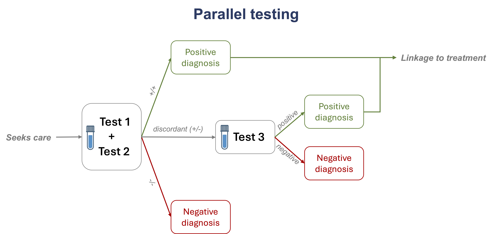
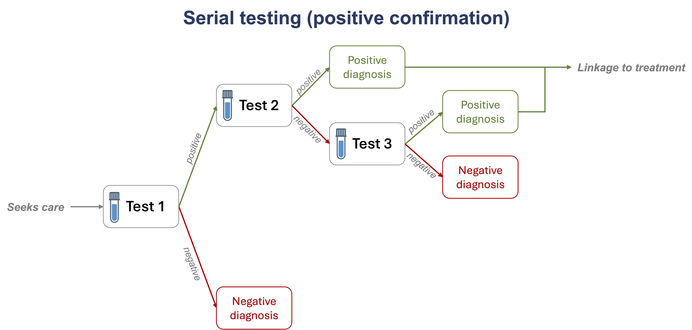
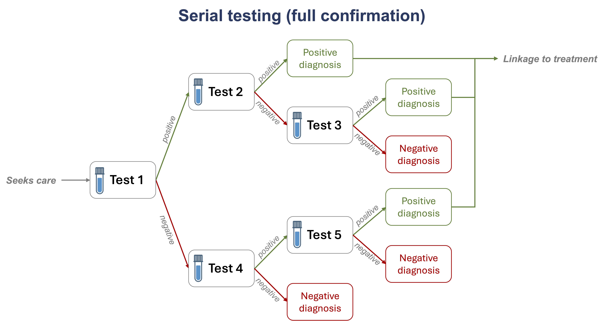

Chagas Diagnostic Algorithms: User Manual
Introduction
Welcome to the Chagas Diagnostic Algorithms application to estimate the effectiveness and cost of different diagnostic algorithms for Chagas disease. Here, we provide detailed information on the model structure and use of the online application.
Please see the section Chagas Diagnostic Algorithm Model for more information on model structure and assumptions.
Please see the section Chagas Diagnostic Algorithm Application for a step-by-step guide to using the online application.
Providing feedback
We welcome feedback on the application, including suggestions for adaptations to the model or the online interface, through our anonymous survey. You may answer as many or as few questions as you wish, and you may provide feedback more than once.
For more in depth questions or comments on the model, please contact Kyra Grantz at Kyra.Grantz@finddx.org.
Acknowledgements
This application was built by the Impact Department and Data Science Unit at FIND. We gratefully acknowledge the support and contribution of our many partners. The multicentric prospective study in Argentina is being conducted by our partners, CONICET, sponsored by the National Institute of Health, INP (National Institute of Parasitology), Fatala within ANLIS, with the support of FIND and DNDi.
Chagas Diagnostic Algorithm Model
In this section, we provide information on how the underlying model calculates performance and costs of the different diagnostic algorithms.
Algorithm Details
There are three generic algorithms the user can select to model: parallel testing, serial testing with confirmatory testing of positives only, or serial testing with full confirmatory testing.
Parallel testing
See Figure 1 for a schematic representation of parallel testing. In this algorithm, all individuals are initially tested with two tests (Test 1 and 2). If both tests are positive, the individual is diagnosed with Chagas and is referred for treatment. If both tests are negative, the individual is diagnosed as Chagas-free, and no further testing is done.
If the initial two tests are discordant (one is positive and one is negative), the patient is referred for an additional confirmatory test (Test 3). If Test 3 is positive, the individual is diagnosed with Chagas and referred for treatment.

Serial testing with positive confirmation
See Figure 2 for a schematic representation of parallel testing of serial testing with positive confirmatory testing. In this algorithm, all individuals are initially tested with Test 1. Any individual negative on Test 1 is diagnosed as Chagas-free, and no further testing is done. Those positive on Test 1 are then referred for confirmatory testing with Test 2.
If Test 2 is positive, the patient is considered diagnosed with Chagas and referred for treatment. If Test 2 is negative (that is, Test 1 and Test 2 are discordant), the patient is referred for an additional confirmatory test (Test 3). If Test 3 is positive, the individual is diagnosed with Chagas and referred for treatment.
Compared to parallel testing, this algorithm tends to have lower costs, due to the reduced number of tests performed, but can result in more false negative (missed) diagnoses, due to the lack of confirmatory testing after Test 1.

Serial testing with full confirmation
See Figure 3 for a schematic representation of parallel testing of serial testing with full confirmatory testing. As with serial testing with positive confirmation only (Figure 2), this algorithm begins with all individuals tested with Test 1. Individuals positive on Test 1 are tested with Test 2; if Test 2 is positive, the patient is diagnosed and referred for treatment and if Test 2 is negative, Test 3 is conducted as a tie-breaker.
This algorithm differs from serial testing with positive confirmation in that individuals testing negative with Test 1 are also referred for confirmatory testing with Test 4. Individuals negative on Test 4 are diagnosed as Chagas-free, and individuals positive on Test 4 are referred for confirmatory testing with Test 5. If Test 5 is positive, the individual is diagnosed with Chagas and referred for treatment.
Therefore, this algorithm reduces the risk of false negative diagnosis compared to serial testing with positive confirmation only. However, this algorithm can be more expensive and can have higher loss to follow-up if multiple visits are needed.

Test performance
Our model assumes that the performance of subsequent tests are independent to one another. That is, we make no adjustment for possible correlation in false negative or false positive results between tests. For this reason, we recommend only modeling performance of tests detecting different antigen or serological targets.
For a given test \(i\) with sensitivity \(\rho_i\) and specificity \(\phi_i\), in a population of size \(n\) with prevalence \(p\), we calculate the following testing outcomes:
| True positives | \(np\rho_i\) |
| False negatives | \(np(1-\rho_i)\) |
| True negatives | \(n(1-p)\phi_i\) |
| False positives | \(n(1-p)(1-\phi_i)\) |
Under our assumption of test independence (and ignoring possible loss to follow-up), we would calculate the following test results if we were then to test all individuals with a test \(j\) of sensitivity \(\rho_j\) and specificity \(\phi_j\):
| Test \(i\) result: | Positive with test \(j\) | Negative with test \(j\) |
| True positives \(np\rho_i\) | \(np\rho_i * \rho_j\) | \(np\rho_i * (1-\rho_j)\) |
| False negatives \(np(1-\rho_i)\) | \(np(1-\rho_i) * \rho_j\) | \(np(1-\rho_i) * (1-\rho_j)\) |
| True negatives \(n(1-p)\phi_i\) | \(n(1-p)\phi_i * (1-\phi_j)\) | \(n(1-p)\phi_i * \phi_j\) |
| False positives \(n(1-p)(1-\phi_i)\) | \(n(1-p)(1-\phi_i) * (1-\phi_j)\) | \(n(1-p)(1-\phi_i) * \phi_j\) |
We repeat these calculations, based on the above algorithms dictating whether subsequent tests are performed, to calculate the testing outcomes for each population. From this, we can calculate the total number of Chagas diagnoses (true and false diagnoses) to evaluate algorithm performance.
Visits and loss to follow-up
Our model defines a visit as any clinical encounter for a patient to provide a sample for Chagas testing. Note that our model does not consider costs related to visits solely for delivering test results or clinical evaluation, nor does our model consider the use of sample referrals to reduce patient visits.
Patients must attend one visit at either a low- or high-complexity facility to have their initial samples collected for Test 1 (or Tests 1 and 2 simultaneously, if parallel testing). Whether subsequent tests require additional visits depends on the test characteristics and facility level.
For any subsequent test, an additional visit is required if either (1) the preceding test was a serological test, so the expected turnaround time is longer than a single patient’s visit or (2) if the preceding test was conducted at a different facility level (e.g., at a low-complexity facility prior to referral at a high complexity facility).
In other words, subsequent tests are only considered to be conducted at the same visit if the initial test is an RDT, so the results can be returned to the patient within the same clinical encounter, and if the tests are conducted at the same facility level, so no referral to a higher-level facility is required to collect the patient sample or conduct the test.
The total number of visits per patient is calculated by dividing the total number of visits required in the population by the number of initial care seeking patients in the population. Although an algorithm may require up to 3 visits per patient to receive a diagnosis, the average number of visits required is typically much lower, as most patients do not require the maximum number of visits.
Loss to follow-up in the diagnostic cascade occurs whenever a patient has to return for a subsequent visit. The probability of being lost to follow-up upon return for a subsequent visit is the same for all individuals in the model, regardless of their disease status (Chagas-infected or not) and regardless of test or facility type for each visit.
Calculating Costs
Our model allows for a fully-loaded costing of the diagnostic algorithm which incorporates the full laboratory costs of tests and the costs of visits to the health system and to patients.
\[ \text{Total Costs} = \text{Testing costs} + \text{Health system costs} + \text{Patient costs} \]
A test cost for each test in the algorithm must be supplied, which should include test consumables, staffing time, and equipment needed to collect and process samples and conduct that test for one patient. To calculate total testing costs, these per-test costs are multiplied by the total number of patients receiving each test.
Health system and patient costs are calculated on a per-visit basis. Health system costs may include things like staffing time, consumables, and overhead (fixed) costs associated with a patient encounter. In our model, the health system costs of a visit at a low complexity and high complexity facility can differ. Patient costs may include things like transportation, food, and accommodation costs and wages lost associated with attending a care visit. In our model, this value is assumed to be the same whether a visit is at a low or high complexity facility. To calculate total total health system and patient costs, the appropriate per-visit costs are multiplied by the total number of visits at the appropriate facility level.
Linkage to treatment and averting DALYs
We assume that all individuals who receive a positive diagnosis have some probability of being referred for treatment. This probability can differ based on whether the patient received their final diagnosis at a low complexity facility or a high complexity facility, to account for possible additional referrals or visits required to receive treatment at a low complexity facility. Patients with true and false positive diagnoses have the same probability of being referred to treatment.
The model considers that treatment, when effective, can reduce the disability-adjusted life years (DALYs) lost to Chagas among true positive diagnosed cases. Treatment is considered to have a certain effectiveness at achieving seroreversion, which then leads to an average DALYs averted per patient. The average DALYs averted per patient can be adjusted in the model to represent different populations or settings, but no adjustment is made within the model for variation in DALYs averted within the patient population.
Chagas Diagnostic Algorithm Application
Below, we provide a step-by-step guide for using the Chagas Diagnostic Algorithm application. Please refer to the Chagas Diagnostic Algorithm Model section, above, for more details on the underlying model and assumptions.
General Comments
The application requires an internet connection to load and run the model. If you have a poor internet connection, please reach out to Kyra Grantz (Kyra.Grantz@finddx.org) for information on how to install and run the application without internet.
The application is not able to save your work. If you close or refresh the page, you will have to re-enter all data.
However, once you have entered data and generated results, you can download a report from the results tab to have a permanent copy of your work. See Downloading report for more details.
Most diagrams and figures displayed in the application are expandable. Click on the two arrows in the bottom right of the figure to view the figure in full size.
Entering data: General Information
In this section, you will enter information the general context of Chagas diagnosis in your setting. Keep in mind the specific population (e.g., general adult symptomatic population, pregnant women screened at ANC) and context you are modeling.
User name: Optionally, you can provide your name to be added to any reports generated from the model.
Include health system and patient visit costs?: Select yes if you would like to include visits costs to the health system and patient when calculating the costs of each algorithm. If no is selected, algorithm cost will include on testing costs. See Calculating Costs for more details.
Loss to follow-up: Enter the average percent of patients that are lost to follow-up when asked to return for a subsequent visit. See Visits and loss to follow-up for more details.
Linkage to treatment: Enter the average percent of patients who, once diagnosed with Chagas, are successfully referred to and initiate treatment. Two values are required: one for patients whose final diagnosis is made at a Low Complexity Facility and one for patients whose final diagnosis is made at a High Complexity Facility. See Linkage to treatment and averting DALYs for more details.
Entering data: Advanced Settings
There are various parameters regarding Chagas burden and costs that can optionally be updated in the Advanced Settings module. Click the heading “Advanced Settings” to review and modify these parameters if desired.
Prevalence of Chagas in care-seeking population: Among individuals accessing testing in your population, what is the prevalence of Chagas disease? Typically, the prevalence in a population actively seeking care and diagnosis due to Chagas symptoms is higher than the prevalence of Chagas in the general population. However, if you are considering broad screening (e.g., of pregnant women at ANC without symptoms), you may use a value closer to or equal to the general prevalence.
Treatment effectiveness: among those in your population who initiate treatment, what percent achieve cure (seroreversion)?
Percent untreated patients developing long-term morbidities: among individuals in your population with Chagas who do not receive any treatment, what proportion continue to develop a long-term morbidity or disability (including death)
Average DALYs associated with untreated Chagas: among individuals in your population with Chagas who do not receive any treatment, what are the average lifetime DALYs lost due to Chagas infection
Per-visit patient costs: what costs are borne by the patient to attend a medical visit for Chagas diagnosis? Typically, this can include things like average transportation costs, food costs, and lost wages. Do not include the out-of-pocket cost to the patient of Chagas diagnosis. See Calculating Costs for more details.
Per-visit health system costs: what costs are borne by the health system for a patient to attend a medical visit for Chagas diagnosis? Typically, this can include things like staffing time, overhead costs (facility costs, utilities, etc.), and any supplies or consumables used that are not used directly for collecting a sample and conducting a test. Two values are required: one for visits made at a Low Complexity Facility and one for visits made at a High Complexity Facility. See Calculating Costs for more details.
Entering Data: Scenario Specification
The Chagas Diagnostic Algorithm application allows for modeling of up to 3 scenarios simultaneously. These can be scenarios of different general algorithms (see Algorithm Details for more details), scenarios of the same general algorithm with different tests, or a mixture thereof.
After you select the number of scenarios you would like to model, click “Create Scenarios” to generate the data entry modules for each scenario.
For each scenario, you will need to enter the following information:
- Pathway type: Select the general algorithm structure you would like to model in this scenario (either Parallel testing, Serial testing with positive confirmation, or Serial testing with full confirmation). After you select pathway type, the app will automatically update to display the number of required tests that must be entered for that algorithm.
For each test in the algorithm, you will need to enter the following information:
Test type: select whether the test is a rapid diagnostic test (RDT) or whether the test is a laboratory-based serological or molecular test with longer turn-around time. For the purposes of this test, a true point-of-care test with results provided in the same clinical encounter would be considered an RDT.
Label: optionally, provide a name or label for this test to be used in figures and tables in the results.
Facility type: select whether the patient visit and test is conducted at a Low Complexity or High Complexity facility. Note that the model cannot explicitly consider sample referrals (i.e., the patient visit occurs at a low complexity facility but the sample is sent to a high complexity facility for testing). In these situations, you should select the highest facility level involved (i.e., a high complexity facility).
Sensitivity: enter the average test sensitivity for your population.
Specificity: enter the average test specificity for your population.
Cost per test: enter the total laboratory costs associated with conducting this test for one patient. This should include the costs of any tests kits and consumables, as well as per-test staffing and equipment costs. See Calculating Costs for more details.
Viewing results
Once you have finished entering the required information, click “Calculate Pathways” to run the model and generate results. View model results on the Results tab.
Key results
There are five key results displayed for each scenario at the top of the page:
Pathway diagram: a schematic representation of the diagnostic algorithm being modeled
Proportion cases diagnosed: of all Chagas cases in the initial care seeking population, what percent received a diagnosis of Chagas disease from the diagnostic algorithm
Cost per case diagnosed: dividing the total costs of the diagnostic algorithm by the number of true Chagas cases diagnosed
Positive predictive value: of all positive test results, what percent were truly Chagas-positive
Negative predictive value: of all negative test results, what percent were truly Chagas-negative
Figures
Three figures are displayed, showing the positive predictive value (PPV), negative predictive value (NPV), and cost per case diagnosed (CPC) of each scenario across a range of Chagas prevalence in the care seeking population. You can hover over lines in these figures to trace exact values.
Use these figures to explore potential trade-offs between PPV (i.e., ensuring the group of individuals testing positive truly have Chagas disease), NPV (i.e., ensuring true Chagas cases are not inappropriately classified as Chagas-negative), and CPC as prevalence changes.
Detailed results
Finally, a table will include detailed results of algorithm performance, costs, and downstream (treatment-related) outcomes for each scenario. Note that this table may include missing (blank or NA) values if you choose to not provide information on costs or treatment linkage and DALYs.
Use this table for detailed explorations of differences between the number of true and false diagnoses or missed Chagas cases between patients. You may also use this table to calculate additional costs associated with linkage to treatment and further evaluation (see Calculating Costs).
Downloading report
You can download a report (HTML format) from the Results tab by clicking “Generate report” at the bottom of the page. The report will contain the algorithm diagrams and a summary of the key parameters entered for each scenario. It will also contain the same tables and figures displayed on the Results dashboard.
While typically generating a report will only take a few seconds, please note it may take longer (up to a few minutes) on slower internet connections.
HTML files can be saved to your computer and shared like any other file. HTML files can be opened with any web browser (Google Chrome, Safari, Firefox, etc.).